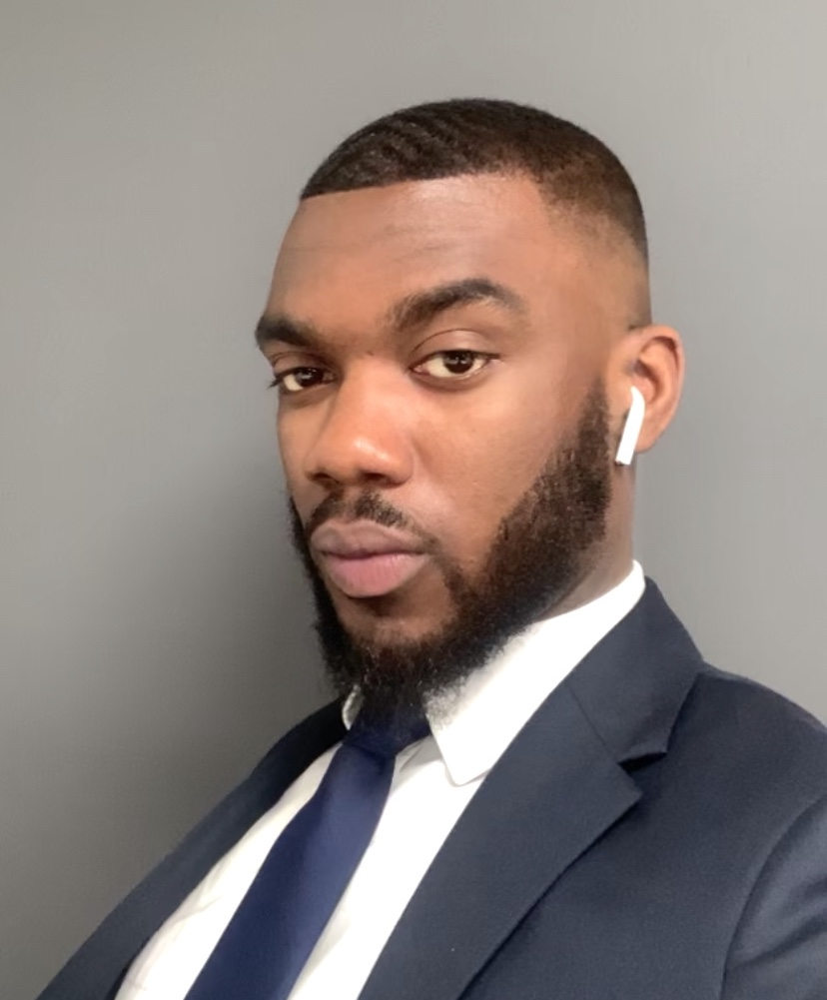

Theo Garshong

Summary
Dedicated and motivated professional seeking
a challenging position in Front-End Web Development,
leveraging coding skills and administrative experience
to contribute to innovative web solutions and improve my ever-expanding knowledge of
coding languages. My technical expertise involves
HTML, CSS & JavaScript. I thoroughly enjoy group collaboration as well as problem solving.
Education
Work Experience
Carflow - Office Administrator
- Streamlined administrative processes, improving efficiency by implementing digital tools.
- Collaborated with cross-functional teams to enhance internal communication.
- Developed and managed new Carflow company website with HTML, CSS & Javascript via Weebly.
Landmark Space
-
Provided exceptional customer service, managing client inquiries and resolving issues promptly.
- Developed and maintained client databases, ensuring accurate and up-to-date information.
- Providing high-speed broadband and phone connectivity for clients through Essensys Tech, including floor and server room patching.
- Managed comms room wiring to ensure ease of access when adhering to client requests.
Skills
- Hard Skills
- HTML
- CSS
- JavaScript
- Essensys Tech
- Salesforce
- Soft Skills
- Project Management
- Team Collaboration
- Problem Solving
- Communication
- Interpersonal Skills
Other Endeavours
- Mentoring and coaching basketball athletes at Bridge Academy, Hackney school.